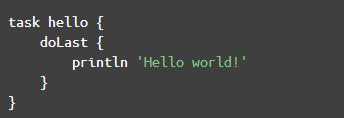
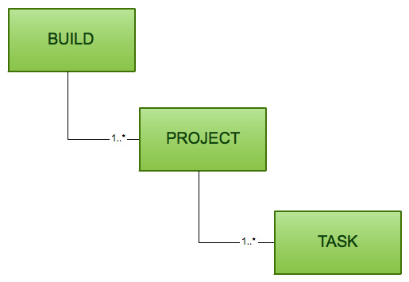
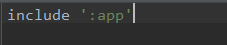
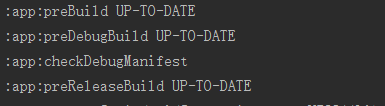
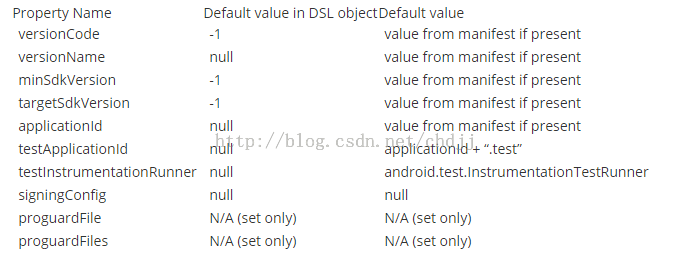
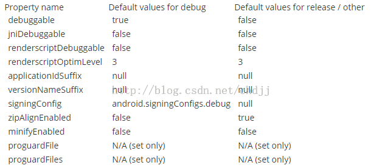

Android Studio已经发布到1.5的版本了，整体已经趋于成熟。之前一直在Eclipse和Android Studio之间交替使用，一方面对Android Studio新的特性好奇，一方面又对自己配置已久的eclipse念念不舍。最近打算把以前的项目都迁移到Android Studio来，所以整理了一下笔记。
事实上，在Android Studio下开发Android程序和eclipse下并没有太大的区别，最大的不同可能就是AS采用了新的构建工具Gradle。但是在eclipse下我们通常不会去在意构建工具，ide已经帮我们完成了项目的构建，这也是大多数人转到AS下后最不适应的地方。造成这一问题的原因就是很多人在学习Android开发时并没有学习一个项目是怎么构建的，离开了ide就无法开发一个完整的项目，没有深入了解ide背后所做的工作，所以换了一个平台后就很难上手。所以这里我们简单了解下java常用的构建工具。
java下最常用的构建工具是Ant，Ant和开发C/C++时使用的make很相似。Ant使用xml来描述一个项目的各个任务的生成顺序以及依赖关系。但是Ant关注了构建项目本身，但是却没有依赖管理的功能。以前我们开发一个java项目，当项目依赖其他jar包时，通常的做法是从网上把jar包下载下来，放到libs目录。但是当项目成长到一定规模，下载一堆jar包是很麻烦的事情，而且还要升级，管理这些jar包。maven使用仓库来管理依赖，当项目依赖其他jar包时，只需要在pom.xml声明依赖库的名称和版本，maven在构建时就能自动从本地或中央仓库中下载对应的依赖。当然了对于一些小型的项目，也没有必要使用maven来构建，eclipse默认就是使用ant构建的。
maven的优点很多，但是xml配置起来实在太繁琐了，而且不利于理解，所以更加方便的Gradle出现了。Gradle继承了maven的许多优点，目录结构也和maven一样，不同的是，Gradle使用了Groovy脚本来构建项目，与xml相比，Groovy更加灵活，易于理解，也更加强大。既然Gradle是使用Groovy语言来管理项目，那我们需要先简单的学习下Groovy语言。
Groovy是一中基于JVM的动态语言。它的语法和java很相似，同时又有Python,Ruby的轻便，你可以简单的把Groovy理解成一种简化版的java，它诞生之初就是为了解决java繁琐的语法，使开发更加简单快捷。
语句
通常我们学习一门新的语言都是从打印hello world开始的。先来回顾下java编写的hello world的例子：1
2
3
4
5public class HelloWorld {
public static void main(String[] args) {
System.out.println("Hello World!");
}
}
很熟悉吧，上面的代码省略了导入包的代码。通常我们编写java代码的流程和这个例子也很相似，导入包，声明类，定义函数，然后实现函数。我们再来看用Groovy编写的hello world。1
println "hello world"
Groovy默认导入了一些公用的包，语句最后的分号是可选的，当一行中有多条语句就需要用分号来隔离。
类型
Groovy是没有类型的java。在java中，我们声明一个字符串通常是这样的：1
String str = "hello world";
在Groovy中，用def代替类型标识符，像下面这样：1
def str = "hello world"
Groovy可以在运行时自动判断对象的类型。
字符串
Groovy中的字符串允许使用单引号和双引号。当使用双引号时，可以在字符串内嵌入一些表达式，类似bahs中的${expression}。1
2name = "world"
println "Hello ${name}"
Groovy支持”uXXXX”来表示特殊字符，例如”u0040”就是字符”@”。
如果有一大块文本不想编码，可以使用Here-docs方便的格式化字符串。类似下面这样：1
2
3
4
5
6name = "world"
txt = """
hello
${name} Are you OK?
"""
println(txt)
下面列举了一些常用的字符串操作函数：
- contains 字符串中是否包含了子串
- count 返回字符串中子字符串出现的次数
- tokenize 根据分隔符将字符串分割成子串 例如”hello^world”.tokenize(‘^’) 将返回[‘hello’,’world’]
- Groovy支持运算符重载 例如’Groovy’-‘oo’得到的字符串是’Grvy’，’oo’*3得到’oooooo’
控制结构
Groovy支持一般的选择和循环结构，用法和java一样。这里只说一点比较特殊的for循环。Groovy的for循环能和各种类型的数组，集合，map,范围等一起使用。1
2
3
4
5
6
7
8
9
10
11
12
13
14
15
16
17
18
19
20
21
22
23
24
25
26
27
28
29
30
31
32
33
34
35//iterate over a range
x = 0
for(i in 0..9)
{
x += i
}
//iterate over a list
for(i in [0,1,2,3,4,5])
{
x += i
}
//iterate over an array
array = (0..5).toArray()
for(i in array)
{
x += i
}
//iterate over a map
map = ['abc':1,'def':2,'xyz':3]
for(e in map)
{
x += e.value
}
//iterate over values in a map
for( v in map.values())
{
x +=v
}
//iterate over the characters in a string
text = 'abc'
list = []
for( c in text)
{
list.add(c)
}
函数
Groovy使用def定义函数，返回值和参数都是可选的。Groovy还是可为函数指定默认参数值。1
2
3
4
5
6
7def repeat(val,repeat=3)
{
for ( i in 0..reapeat)
{
println "This is ${i}:{val}"
}
}
Groovy支持可变参数。像这样：1
2
3
4
5
6
7int sum(int... var)
{
def total = 0
for (i in var)
total += i
return total
}
然后我们调用sum函数时可以指定任意个参数：1
2
3println sum(1)
println sum(1,2)
println sum(1,2,3)
类
Groovy类和java类一样，甚至可以直接使用标准的java语法定义类，但是使用Groovy，定义一个类会变得非常简单。总结起来，Groovy有以下不同：
- 不需要public修饰符，因为Groovy默认就是public修饰符
- 不需要类型说明，这个前面已经讲过了
- 不需要get/set方法，Groovy也已经为了完成了
- 不需要构造函数，Groovy提供了一个构造函数，这个函数接受一个名称-值对的映射，这些名称-值对和类的属性相对应。
举一个简单的例子：1
2
3
4
5
6
7
8
9
10
11
12
13class person
{
def name
def age
def sex
}
def prn = new person(name:'YL',age:20,sex:'female')
//也可以像这样
def prn2 = new person()
prn2.name = 'YL'
prn2.age = 20
prn2.sex = 'famale'
闭包
闭包的概念常见于一些动态语言和函数式语言中，下面是维基百科对闭包的解释。
在计算机科学中，闭包（英语：Closure），又称词法闭包（Lexical Closure）或函数闭包（function closures），是引用了自由变量的函数。这个被引用的自由变量将和这个函数一同存在，即使已经离开了创造它的环境也不例外。所以，有另一种说法认为闭包是由函数和与其相关的引用环境组合而成的实体。闭包在运行时可以有多个实例，不同的引用环境和相同的函数组合可以产生不同的实例。
只看字面意思好像很难理解。举一个简单的例子，我们先用普通的做法循环打印一个集合中内容。1
2
3
4
5def acoll = ["Groovy", "Java", "Ruby"]
for(Iterator iter = acoll.iterator(); iter.hasNext();){
println iter.next()
}
用闭包是怎样的呢？1
2
3
4
5def acoll = ["Groovy", "Java", "Ruby"]
acoll.each{
println it
}
在闭包中it是一个关键字，用来指向被调用的外部集合中的每一个值，它是一个默认的值，也可以用传递给闭包的参数覆盖它。1
2
3
4
5def acoll = ["Groovy", "Java", "Ruby"]
acoll.each{ value ->
println value
}
闭包允许使用多个参数，像下面这样可以打印集合的key和value。1
2
3
4def hash = [name:"Andy", "VPN-#":45]
hash.each{ key, value ->
println "${key} : ${value}"
}
each是一个函数，上面的代码中，闭包作为参数传递给each函数。在Groovy中一个特殊的用法就是当闭包作为函数的最后一个参数时，调用函数可以省略圆括号。这个特点非常重要，因为在Gradle中经常会出现下面这样的代码：

在Groovy中，一切都是对象，闭包也是，它是一种特殊的代码块(可以把闭包理解成一个C/C++中的函数指针)，它可以被直接调用，也可以被命名。像这样：1
2
3def excite = {
word-> return "this is ${word} "
};
调用闭包有两种方式：1
2excite("Groovy");
excite.call("Groovy")
invokeMethod
我们知道java中所有的类都默认继承了Object对象，Object对象实现了很多方法，所以我们定义的类就可以直接调用这些方法。在Groovy中，所有的类都默认实现了GroovyObject接口，这个接口中定义了一个很重要的方法：invokeMethod。这个方法对于Groovy的动态性编程很有用，而且可以实现一些很先进的概念，比如下面的DSL。我们来看下invokeMethod方法在一个类中的作用。1
2
3
4
5
6
7
8
9
10
11class invoketestor{
deftest()
{
println " hello,function name is test'
}
def invokeMethod(String name,Object args)
{
println "the other function,name is ${name}"
}
}
我们来测试下上面的类：1
2
3
4def testor = new invoketestor()
testor.test()
testor.hello()
testor.doSomething()
运行结果如下:1
2
3hello,function name is test
the other funcation,name is hello
the other funcation,name is doSomething
可以看出testor.test()方法调用了invoketest类的test()方法，而testor.hello()和testor.doSomething()方法都调用了invoketest类的invokeMethod方法。这说明对于一个实现了invokeMethod方法的Groovy的对象，可以执行任意方法，如果该方法没有在类中定义，则执行invokeMethod方法。这里invokeMethod方法的name参数就是方法名，args参数就是被调用方法的参数。
DSL
使用Groovy可以很容易的实现DSL(领域专用语言)，什么是领域专用语言呢？就是只侧重特定领域的表达有限的计算机语言，比如像sql语言，就是一种很典型的DSL，你没有办法使用sql去编写一个操作系统，但是它却能很好的处理关系数据库，而类似java/c++这类就是通用语言。由于Groovy自身语法的特性，Groovy对DSL提供了良好的支持，比如：
- Groovy脚本，不用定义 class
- Groovy的 invokeMethod方法
- 方法可不书写（）
- 语句末尾省略；分号
- 不书写 return
下面我们通过Groovy来编写一种用于构建xml字符串的DSL。这种DSL的用法如下：1
2
3
4
5
6
7
8xml.html{
head{
title "Hello World"
}
body{
p"Welcome"
}
}
首先分析下上面的代码，按照Groovy的语法，我们可以理解是xml对象调用了html方法，该方法中传递了一个闭包作为参数，而传给html方法的闭包中一次调用了两个方法，两个方法调用分别也是以闭包作为参数，闭包中又调用了一次函数，这些函数都理解为是xml对象的函数。下面我们来写该DSL的解析类。1
2
3
4
5
6
7
8
9
10
11
12
13
14class XmlBuilder{
def out
def invokeMethod(String name,Object args){
out.append("<$name>\n");
if(args[0] instanceof Closure){
args[0].delegate == this;
args[0].call();
}
else{
out.append(args[0].toString()+"\n")
}
out.append("</$name>\n");
}
}
这段代码利用了Groovy的invokeMethod方法。根据参数类型，如果是闭包就进一步执行闭包，如果是字符串则直接输出。需要特别注意的是在执行闭包之前的这段代码args[0].delegate = this;这条语句主动的修改了每个闭包的委派对象，保证了闭包中调用的方法都是在XmlBuilder中需要，需要不到，调用XmlBuilder的invokeMethod方法，前面提到过，闭包跟定义它本身的代码环境有密切关系，这个关系就是由delegate决定，默认情况下delegate是定义闭包的外层对象，在这里，最里层的闭包的delegate对象默认就是外层的闭包对象，而外层闭包对象并没有定义title和p方法，就会出现找不到方法的异常，所以需要有这一句代码，在每次执行闭包的时候都将闭包的delegate指向XmlBuilder类的当前对象实例，保证了找不到方法就调用XmlBuilder的invokeMethod方法。
下面我们来调用这段代码对xml解析。1
2
3
4
5
6
7
8
9
10def out = new StringBuilder()
def xml = new XmlBuilder(out:out)
xml.html{
head{
title "Hello World"
}
body{
p "Welcome!"
}
}
输出：1
2
3
4
5
6
7
8
9
10<html>
<head>
<title>
Hello World
</title>
</head>
<body>
<p> Welcome! </p>
</body>
</html>
上面就是Groovy的一些基本知识，Groovy的知识要多得多，感兴趣的读者可以从Groovy的官网中学习。
Gradle构建
Gradle是以Groovy语言为基础，面向java应用为主，基于DSL语法的自动化构建工具。
首先我们需要了解Gradle中两个基本概念：项目和任务。
- 项目是指我们的目的，比如产生一个jar或者网页应用，但是不一定非要代表要构建出某个东西，它也有可能代表要做的某一件事，比如完成某个单元的测试或者部署你的应用。
- 任务是不可分的最小工作单元，执行构建工作(比如编译项目或者执行测试)。
每一次构建都包含一个或多个项目。下面这张图片展示了它们的关系：

下面我们在AS中新建一个example项目，来展示一个Gradle项目的基本构成，这个是example项目的目录。
在一个项目中，主要使用以下配置文件对Gradle的构建进行配置：
- Gradle构建脚本（build.gradle）指定了一个项目和它的任务。
- Gradle属性文件（gradle.properties）用来配置构建属性。
- Gradle设置文件（gradle.settings）对于只有一个项目的构建而言是可选的，如果我们的构建中包含多于一个项目，那么它就是必须的，因为它描述了哪一个项目参与构建。每一个多项目的构建都必须在项目结构的根目录中加入一个设置文件。
在example这个例子中，只有一个项目，就是app。在AS中，用module表示一个项目，而project则是整个工程。

生命周期
1 初始化阶段，会去读取根工程中setting.gradle中的include信息，决定有哪几个工程加入构建，创建project实例，比如下面有三个工程： include ‘:app’, ‘:lib1’, ‘:lib2’
2 配置阶段，会去执行所有工程的build.gradle脚本，配置project对象，一个对象由多个任务组成，此阶段也会去创建、配置task及相关信息。
3 运行阶段，根据gradle命令传递过来的task名称，执行相关依赖任务。
Task
通常我们会看到这样创建一个任务：1
2
3
4
5task hello {
doLast {
println "hello"
}
}
或者用<<替换doLast，为什么要增加doLast呢？如果是这样写：1
2
3task hello{
println "hello"
}
那么打印会在gradle的配置阶段执行，而doLast会在gradle运行阶段执行。task中有一个action list，task运行时会按顺序执行action list中的action，doLast或者doFirst后面跟的闭包就是一个action，doLast是把action插入到list的最后面，而doFirst是把action插入到list的最前面。
在Gradle中，各个task并不是孤立的，它们是相互依赖的。要让一个task依赖另一个task需要在task定义时加入”dependsOn:”，被依赖的task会优先于依赖task执行。1
2
3
4
5
6task hello << {
println 'Hello '
}
task world(dependsOn: hello) << {
println "World!"
}
增量构建
我们在build一个apk后，打开Gradle Console会看到类似下面的信息。

在Gradle中，每一个task都有inputs和outpus，如果在执行一个task时，它的输入输出与前一次没有发生变化，那么Gradle会认为该task是最新的，因此Gradle将不会执行这个task。一个task的inputs和outputs可以是一个或多个文件，或者文件夹，甚至是某个闭包所定义的条件。
“:app:preBuild”是任务名，后面的UP-TO-DATA表示这个task是最新的。
插件
Groovy的设计理念是，所有的特性都是由Gradle插件完成的，这一点和maven很像。一个Gradle插件能够：
- 在项目中添加新任务
- 为新加入的任务提供默认配置，这个默认配置会在项目中注入新的约定（如源文件位置）。
- 加入新的属性，可以覆盖插件的默认配置属性。
- 为项目加入新的依赖。
其实插件就是为了简化我们的工作，帮我们定义好了默认的配置和任务。我们可以通过在项目中的build.gradle中使用名称或类型来指定Gradle插件。比如声明一个java插件：1
apply plugin: 'java'
这段代码声明使用’java’类型的插件来构建这个项目，表示这个一个java程序。当我们声明使用了java插件后，Gradle在构建的时候就会从默认的目录读取源文件，比如”/src/main/java”中应该存放源代码。Gradle和maven一样采用”约定优于配置”的原则，在可能的情况下提供合理的默认值。如果你想修改这些配置，可以使用”sourceSets”来重新定义源文件的位置。例如：1
2
3
4
5
6
7
8
9
10sourceSets{
main{
java{
srcDir 'src/java'
}
resources{
srcDir 'src/resources'
}
}
}
Android Plugin DSL
基本配置
最后来介绍下Android Gradle插件的DSL语言。AS支持的android plugin dsl的语法非常的简洁，下面列举一些常用的配置。
在项目主目录下的build.gradle用于配置构建过程中依赖的库和一些全局配置。1
2
3
4
5
6
7
8
9
10
11
12
13
14
15
16
17
18
19buildscript {
//构建过程依赖的仓库
repositories {
jcenter()
}
//构建过程需要依赖的库
dependencies {
//下面声明的是gradle插件的版本
classpath 'com.android.tools.build:gradle:1.1.0'
// NOTE: Do not place your application dependencies here; they belong
// in the individual module build.gradle files
}
}
//这里面配置整个项目依赖的仓库,这样每个module就不用配置仓库了
allprojects {
repositories {
jcenter()
}
}
在moudle下的build.gradle用于配置当前模块。1
2
3
4
5
6
7
8
9
10
11
12
13
14
15
16
17
18
19
20
21
22
23
24
25
26
27//声明插件，这是一个android程序，如果是android库，应该是com.android.library
apply plugin: 'com.android.application'
android {
//安卓构建过程需要配置的参数
compileSdkVersion 21//编译版本
buildToolsVersion "21.1.2"//buildtool版本
defaultConfig {//默认配置，会同时应用到debug和release版本上
applicationId "com.taobao.startupanim"//包名
minSdkVersion 15
targetSdkVersion 21
versionCode 1
versionName "1.0"
}
buildTypes {
//这里面可以配置debug和release版本的一些参数，比如混淆、签名配置等
release {
//release版本
minifyEnabled false//是否开启混淆
proguardFiles getDefaultProguardFile('proguard-android.txt'), 'proguard-rules.pro'//混淆文件位置
}
}
}
dependencies {
//模块依赖
compile fileTree(dir: 'libs', include: ['*.jar'])//依赖libs目录下所有jar包
compile 'com.android.support:appcompat-v7:21.0.3'//依赖appcompat库
}
defaultConfig中是一些基本配置，它会同时应用到debug/release版本上，下面列举了所有可配项及对应的值：

buildTypes节点用于配置构建的版本，默认有release/debug两个版本。下面列举了所有可配项：

仓库
gradle有三种仓库，maven仓库，ivy仓库以及flat本地仓库。声明方式如下：1
2
3
4
5
6
7
8
9maven{
url "..."
}
ivy{
url "..."
}
flatDir{
dirs 'xxx'
}
有一些仓库提供了别名，可直接使用：1
2
3
4
5repositories{
mavenCentral()
jcenter()
mavenLocal()
}
签名配置
默认情况下已经有一个debug的签名配置，它使用了debug.keystore。该 keystore 有一个已知的密码和默认的带有已知密码的 key。 debug keystore 位于$HOME/.android/debug.keystore，如果没有会被创建。
debug buildType被设置为自动使用debug签名配置。你可以创建其他签名配置或者自定义，通过signingConfigs DSL容器。1
2
3
4
5
6
7
8
9
10
11
12
13
14
15
16
17
18
19
20
21
22android {
signingConfigs {
debug {
storeFile file("debug.keystore")
}
myConfig {ss
storeFile file("other.keystore")
storePassword "android"
keyAlias "androiddebugkey"
keyPassword "android"
}
}
buildTypes {
foo {
debuggable true
jniDebuggable true
signingConfig signingConfigs.myConfig
}
}
}
以上片段会把 debug keystore 的路径改为工程的根目录。这会自动的影响任何用到它的 Build Types ，在这里影响到的是 debug Build Type 。
代码混淆
自从 Gradle plugin for ProGuard 4.10 版本以后，Gradle 开始支持混淆。如果通过 Build Type 的 minifyEnabled 属性配置了使用混淆后，The ProGuard plugin 会自动被应用，并且自动创建一些任务。1
2
3
4
5
6
7
8
9
10
11
12
13
14
15
16android {
buildTypes {
release {
minifyEnabled true
proguardFile getDefaultProguardFile('proguard-android.txt')
}
}
productFlavors {
flavor1 {
}
flavor2 {
proguardFile 'some-other-rules.txt'
}
}
}
使用 buildTypes 以及 productFlavors 定义的规则文件可以轻松的生成多种版本。
有两个默认的规则文件
- proguard-android.txt
- proguard-android-optimize.txt
他们位于SDK中，使用 getDefaultProguardFile() 方法可以返回文件的全路经。除了是否启用优化之外，这两个文件的其他功能都是相同的。
依赖配置
要配置一个外部库jar包，你可以在compile配置里添加一个依赖。1
2
3
4
5
6
7dependencies {
compile files('libs/foo.jar')
}
android {
...
}
注： dependencies DSL 元素是标准 Gradle API 的一部分，并不属于 android 的元素。
compile 配置用来编译 main application，它里面的一切都会被添加到编译的 classpath 中，并且也会被打包到最终的 APK 中。
这里还有添加依赖时其他的配置：
- compile： main application
- androidTestCompile： test application
- debugCompile： debug Build Type
- releaseCompile： release Build Type
因为要构建生成一个 APK，必然会有相关联的 Build Type ，APK默认配置了两个(或者更多)编译配置：compile和\Compile。 创建一个新的 Build Type 的时候会自动创建一个基于它名字的编译配置。
更多的Android Plugin DSL配置可以从google官方手册中获得。